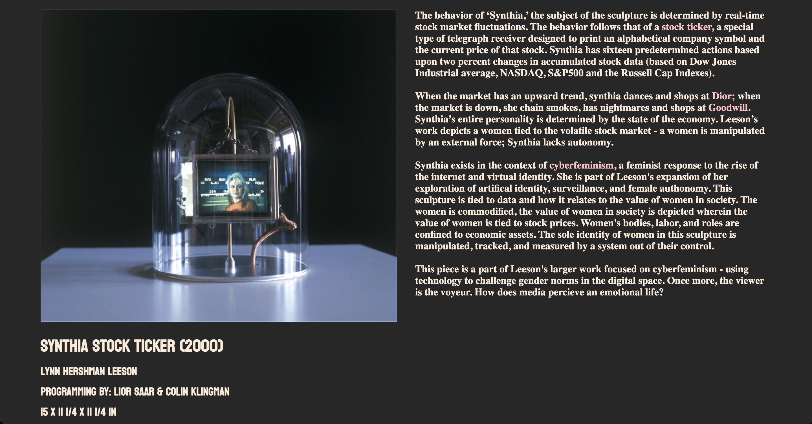
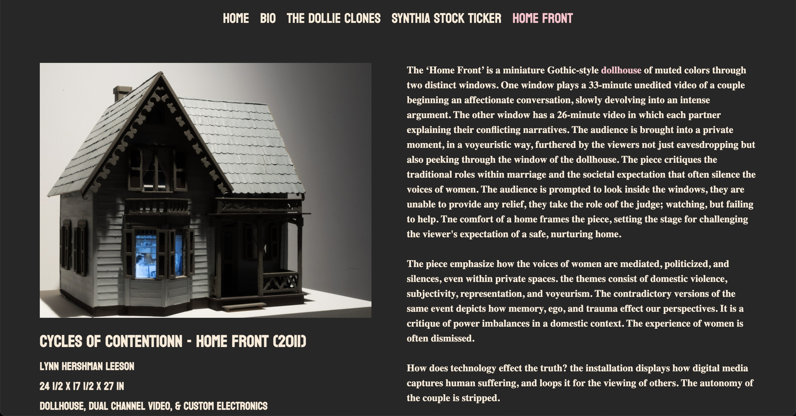
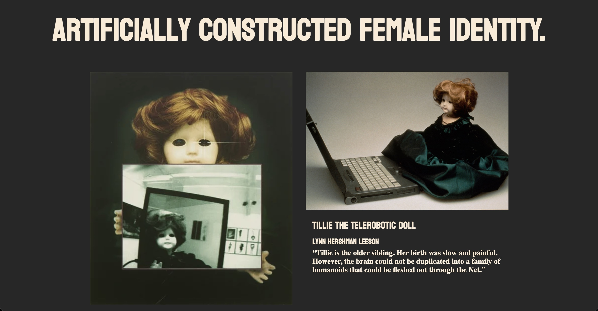
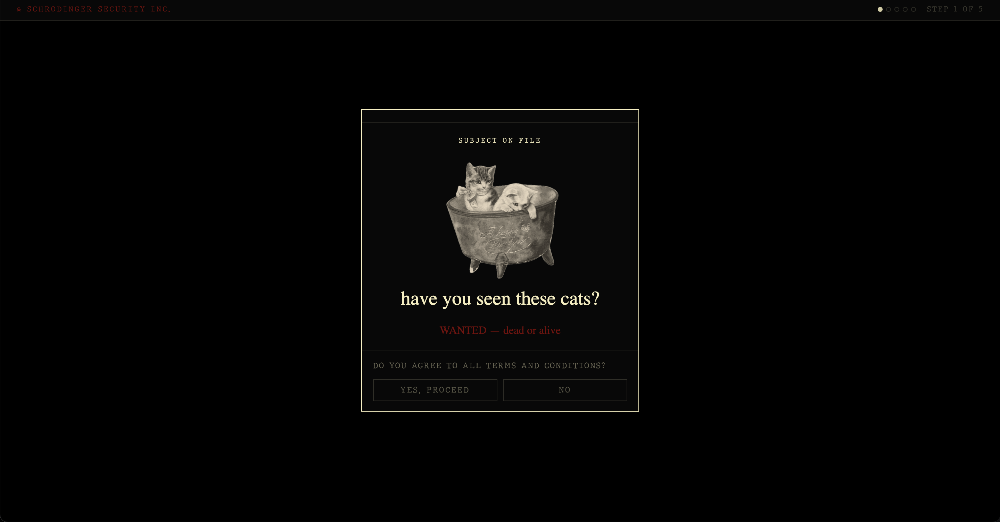
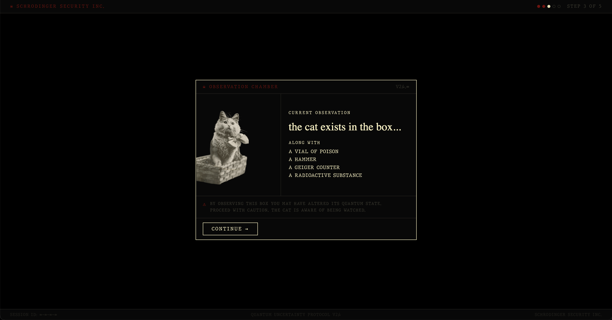
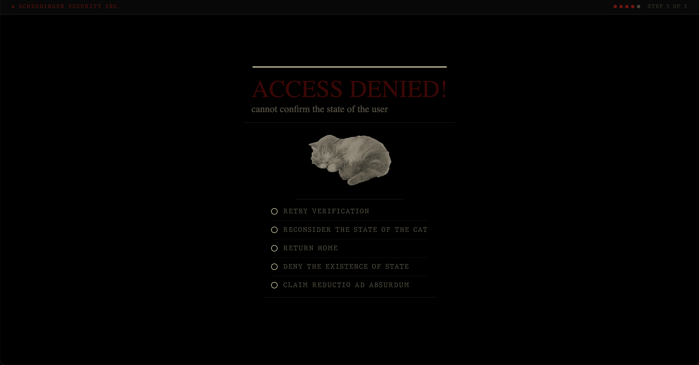

Net-art systems exploring identity, surveillance, and digital embodiment.
Identity behaves like financial data — unstable, reactive, and continuously revalued.


Recursive systems of conflict and feedback loops embedded in social structures.
Fragmented digital identity through replicated avatar systems and synthetic selfhood.

Hershman Leeson anticipates AI identity systems, surveillance logic, and synthetic selfhood.
The system begins in a neutral observation state. Identity is undefined.

Inside the sealed system: overlapping signals, uncertainty, and probabilistic collapse.

The system resolves incorrectly. Verification fails by design.

The system outputs a probabilistic identity based on the available data, but remains fundamentally uncertain.